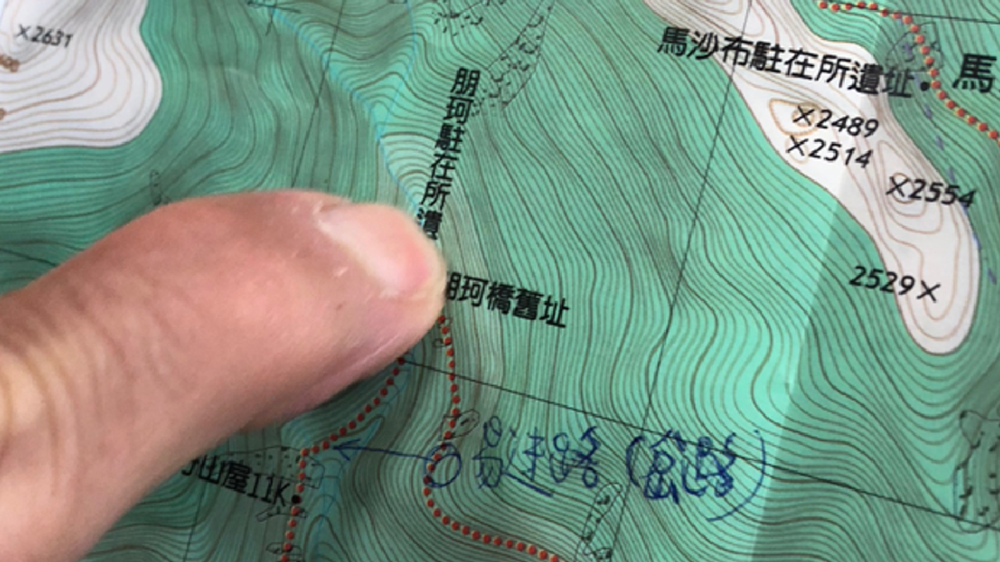

｜奇蹟般的生還：八通關古道全段縱走事件
何三隆走在朋珂駐在所斷橋處，沿著河床右邊上切直走尋找古道，走了20分鐘卻仍不見古道。回頭卻也找不到先前的路，他確信自己迷路了⋯⋯

行政院2019年宣布國家解禁山林，讓民眾更輕易走入林地。
據消防署統計，2020年山域事故件數來到10年高點，與2019年相比暴增2.3倍，死亡人數也創下新高。
死亡陰影下的攻頂之路，如何才能走得安全順遂？
何三隆走在朋珂駐在所斷橋處，沿著河床右邊上切直走尋找古道，走了20分鐘卻仍不見古道。回頭卻也找不到先前的路，他確信自己迷路了⋯⋯